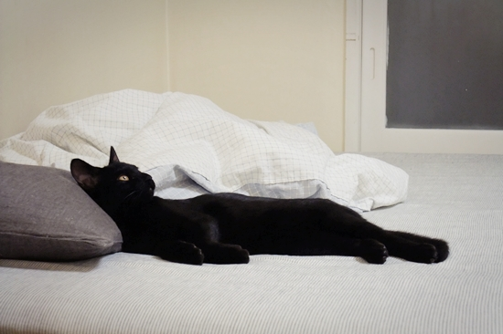

3차 예방접종을 하러 동물병원에 다녀왔다. 진료와 관계된 얘기 외에도 항상 고양이에 관한 재미난 얘기를 건네주는 젊은 의사선생님이 진료해주었는데, 예쁘게 컸다며 올블랙 간장의 미모를 알아주니 마치 팔불출 부모처럼 흐뭇한 미소를 감출 수 없었다.
3주 후 항체 검사를 하고 별문제가 발견되지 않으면 중성화 수술을 하게 된다. 오늘 예방주사 맞을 때 바늘이 휘도록 몸부림치는 걸 보고 마음이 아팠는데, 몸에 칼을 대는 수술을 하게 되면 또 얼마나 고통스러울지 걱정이 앞선다. 본성대로 살 수 있는 환경을 만들어주지 못해 간장에게 미안하다.
열심히 돈 벌어 캣타워도 사주고, 함께 뛰어놀 동생도 조만간 데려올 테니 너무 서운해하진 마, 간장.
3주 후 항체 검사를 하고 별문제가 발견되지 않으면 중성화 수술을 하게 된다. 오늘 예방주사 맞을 때 바늘이 휘도록 몸부림치는 걸 보고 마음이 아팠는데, 몸에 칼을 대는 수술을 하게 되면 또 얼마나 고통스러울지 걱정이 앞선다. 본성대로 살 수 있는 환경을 만들어주지 못해 간장에게 미안하다.
열심히 돈 벌어 캣타워도 사주고, 함께 뛰어놀 동생도 조만간 데려올 테니 너무 서운해하진 마, 간장.